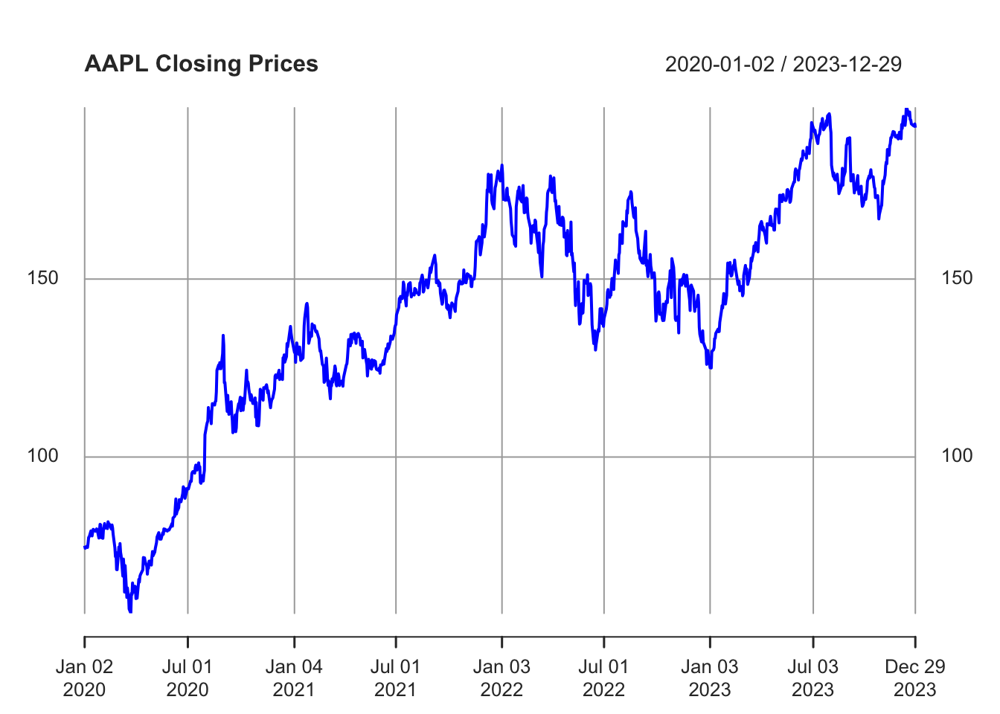
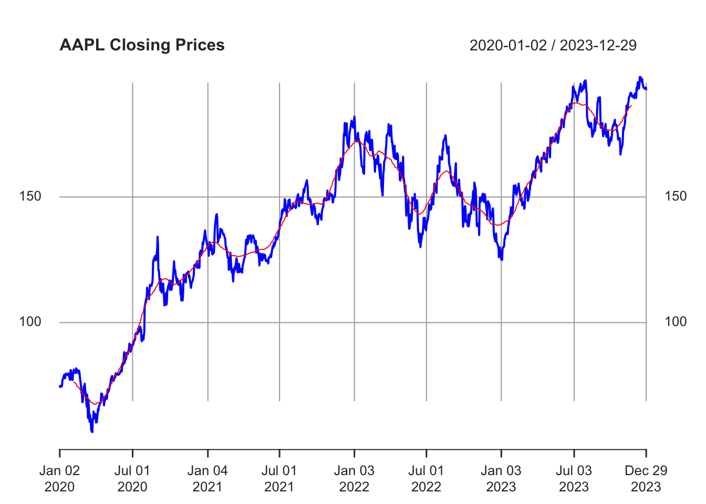
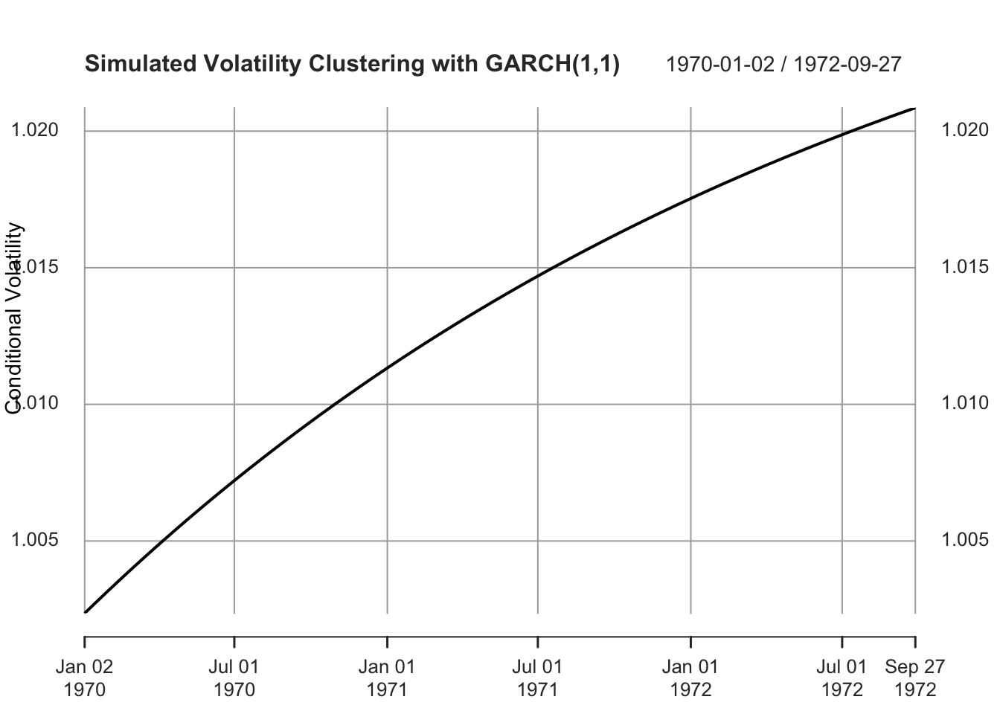
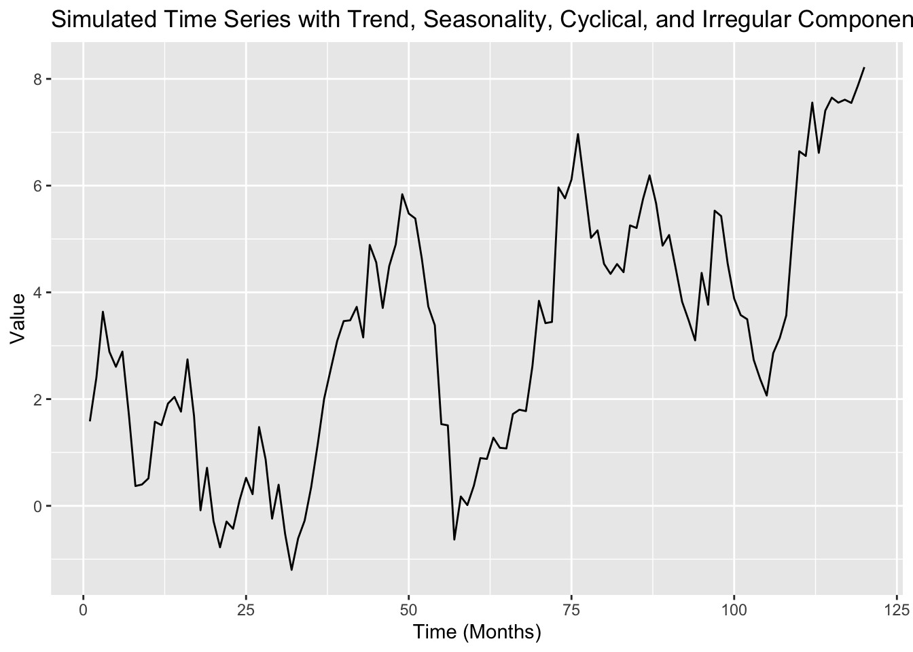
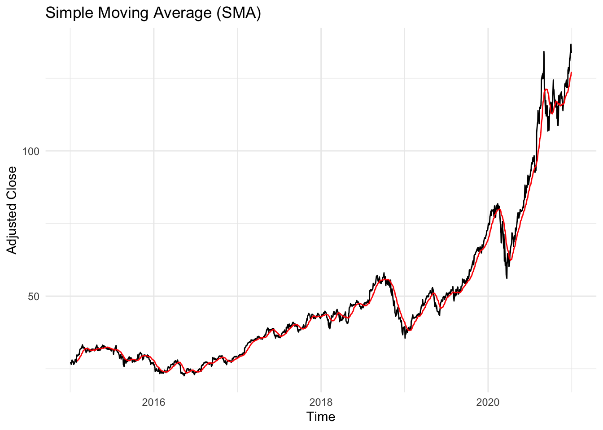
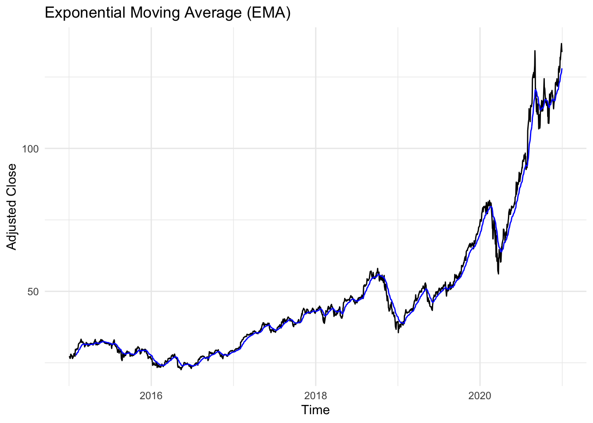
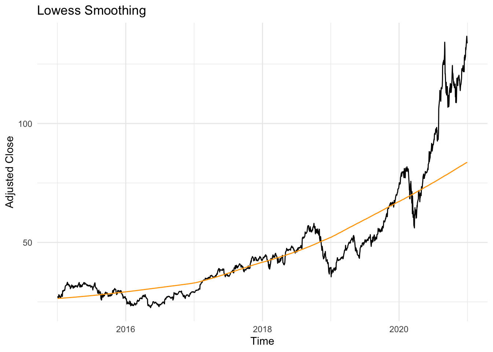
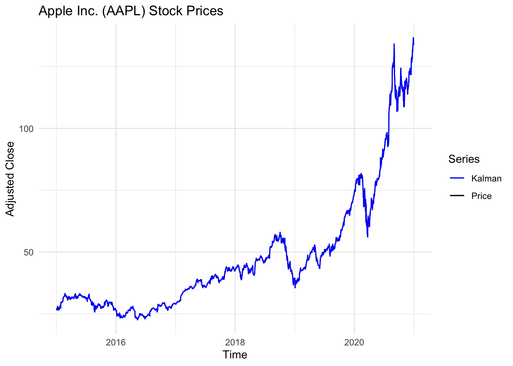
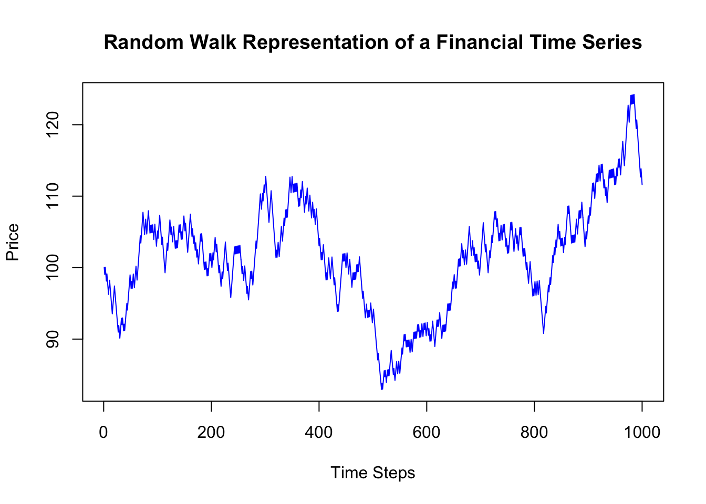

# R Example: Time Series Analysis of Stock Prices
library(quantmod)
# Fetching stock data
getSymbols("AAPL", src = "yahoo", from = "2020-01-01", to = "2023-12-31")[1] "AAPL" Financial time series data encapsulates the essence of the financial world’s dynamism, representing a sequence of quantifiable financial events spread across time intervals. This data type is indispensable in the realm of finance, serving as a critical tool for analyzing and interpreting market movements, economic indicators, and financial trends. For analysts, investors, economists, and policy makers, understanding financial time series is not just beneficial – it’s crucial for informed decision-making and strategic planning in the ever-evolving landscape of financial markets.
Financial time series data encapsulates the essence of the financial world’s dynamism, representing a sequence of quantifiable financial events spread across time intervals. This data type is indispensable in the realm of finance, serving as a critical tool for analyzing and interpreting market movements, economic indicators, and financial trends. For analysts, investors, economists, and policy makers, understanding financial time series is not just beneficial – it’s crucial for informed decision-making and strategic planning in the ever-evolving landscape of financial markets.
At its core, financial time series data is a collection of observations recorded sequentially over time. It encompasses a broad spectrum of data types, including daily stock prices, monthly interest rates, annual GDP figures, and more. Each data point in a time series bears a timestamp, reflecting its unique position in the temporal sequence. This inherent time-dependency is what sets financial time series apart from other statistical data, introducing complexities like trends, seasonality, and autocorrelation.
Time series analysis is the linchpin of economic forecasting. By dissecting historical data, analysts unlock patterns and rhythms – trends, seasonal effects, and cycles. These insights are instrumental in projecting future economic scenarios, informing decisions in areas like portfolio management, risk mitigation, and economic policy development.
The financial markets are a fertile ground for the application of time series analysis. Techniques like ARIMA modeling, volatility forecasting, and cointegration analysis are employed to predict stock prices, evaluate risks, and unearth trading signals. Traders scrutinize past price trajectories to anticipate future movements, while risk managers use time series data to gauge market volatility and shield against potential downturns.
Time series analysis is a cornerstone of modern investment strategy. Investors and portfolio managers rely on these analyses to track market trends, gauge asset performance, and time their buy-and-sell decisions. Sophisticated techniques like GARCH models for volatility forecasting and VAR models for understanding the dynamic interplay between multiple financial variables are integral in shaping well-informed, resilient investment portfolios.
To concretise these concepts, let’s consider a practical example using R, a powerful tool for statistical computing and graphics, widely used in financial econometrics.
Suppose we want to analyze the daily closing prices of a stock (e.g., Apple Inc.). We can employ time series models to forecast future prices, assess volatility, or identify trends.
# R Example: Time Series Analysis of Stock Prices
library(quantmod)
# Fetching stock data
getSymbols("AAPL", src = "yahoo", from = "2020-01-01", to = "2023-12-31")[1] "AAPL"# Analyzing the closing prices
aapl_close <- Cl(AAPL)
# Plotting the closing prices
plot(aapl_close, main = "AAPL Closing Prices", col = "blue")
# Using a simple time series model - Moving Average
aapl_ma <- rollmean(aapl_close, k = 50, fill = NA)
lines(aapl_ma, col = "red")
# More advanced analysis - ARIMA model
library(forecast)
aapl_arima <- auto.arima(aapl_close)
forecast_aapl <- forecast(aapl_arima, h = 30)
plot(forecast_aapl)
In this R script, we first import Apple’s stock data using the quantmod package. We then plot the closing prices to visualize the data. A simple moving average is applied to smooth out short-term fluctuations and highlight longer-term trends. Finally, an ARIMA (AutoRegressive Integrated Moving Average) model is fitted to the data, offering a more sophisticated forecasting tool. The forecast function is used to predict future stock prices, which can be invaluable for investment decision-making.
While financial time series analysis provides powerful insights, it comes with challenges. Financial markets are influenced by a myriad of factors - economic indicators, political events, investor sentiment - making modeling and prediction complex. Analysts must be wary of overfitting models and remain vigilant to changing market dynamics. Moreover, the assumption of stationarity in time series data often requires careful examination and potential transformation of the data.
Financial time series data is a gateway to deeper insights into the financial universe. Its analysis, through a blend of statistical techniques and domain expertise, equips finance professionals with the tools to navigate the complexities of financial markets. From predicting stock prices to understanding economic trends, time series analysis is an indispensable part of financial decision-making. Through practical application, like the R examples provided, analysts can transform raw data into actionable insights, driving forward-thinking strategies in the financial sector.
In this chapter, we will delve deeper into the methodologies and tools of financial time series analysis. We will explore various models, from simple moving averages to complex ARIMA and GARCH models, and discuss their applications in real-world financial scenarios. The goal is to equip readers with a comprehensive understanding of time series analysis, enabling them to apply these concepts effectively in their professional endeavors in finance.
Financial time series data exhibit unique characteristics that differentiate them from other types of data, making their analysis and modeling crucial for anyone involved in financial markets research or practice. Understanding these features is essential as they not only describe the behavior of financial data but also guide the selection of appropriate quantitative methods. In this updated text, we provide theoretical explanations and academic references for each characteristic of financial time series data:Adjusting the Python examples to R and adding behavioral economics perspectives provides a comprehensive view of financial time series analysis, combining statistical techniques with insights into investor behavior. Below, I present the R code equivalents for the previously discussed characteristics, along with behavioral economics explanations where relevant.
Volatility Clustering (VC)
One of the most prominent features of financial time series is volatility clustering (VC), which refers to the tendency of periods of high volatility to be followed by more high volatility periods, and low volatility periods to be followed by more low volatility periods (Engle, 1995). This phenomenon can be described by the GARCH model, a generalization of the Autoregressive Conditional Heteroscedasticity (ARCH) model, which allows for varying levels of volatility over time. VC is particularly evident in stock market data (Bollerslev & Engle, 1992), where large price changes are often followed bysimilar-sized changes.
R Code Illustration:
library(rugarch)
set.seed(42)
n <- 1000
spec <- ugarchspec(variance.model = list(model = "sGARCH", garchOrder = c(1, 1)), mean.model = list(armaOrder = c(0, 0), include.mean = FALSE))
data <- rnorm(n)
fit <- ugarchfit(spec = spec, data = data)
# Plotting the conditional volatility
plot(sigma(fit), main="Simulated Volatility Clustering with GARCH(1,1)", ylab="Conditional Volatility", xlab="Time")
Behavioral Economics Perspective: Volatility clustering can be influenced by investor reactions to news or market events, where overreactions or underreactions to new information can lead to periods of heightened or reduced volatility. This behavioral response is often modeled through investor sentiment and its impact on market dynamics.
Leverage Effects (LE)
Leverage effects (LE) occur when negative asset returns are associated with an increase in volatility, more than positive returns of the same magnitude. This asymmetric volatility challenges the assumption of constant volatility in traditional financial models. LE can be explained by JP Morgan’s famous “four moments of return” hypothesis, which assumes that the distribution of asset returns has heavier tails and higher kurtosis than a normal distribution (Jorion, 1997).
R Code Illustration:
spec_egarch <- ugarchspec(variance.model = list(model = "eGARCH", garchOrder = c(1, 1)), mean.model = list(armaOrder = c(0, 0), include.mean = FALSE))
fit_egarch <- ugarchfit(spec = spec_egarch, data = data)
# Plotting the conditional volatility
plot(sigma(fit_egarch), main="Simulated Leverage Effect with EGARCH(1,1)", ylab="Conditional Volatility", xlab="Time")Behavioral Economics Perspective: Leverage effects reflect how negative news or losses can lead to higher risk perceptions among investors compared to positive news, a phenomenon consistent with loss aversion—a key concept in behavioral economics where losses are felt more acutely than gains of the same magnitude.
R Code Illustration:
set.seed(42)
data_ht <- rt(n, df=3)
hist(data_ht, breaks=50, probability=TRUE, main="Histogram of Returns with Heavy Tails", xlab="Returns", col="green")Behavioral Economics Perspective: Heavy tails and kurtosis in financial returns can be seen as outcomes of collective decision-making biases. For instance, herding behavior—where investors follow the actions of others—can lead to extreme market movements, contributing to fat tails in return distributions.
R Code Illustration:
set.seed(42)
mu <- 0
phi <- 0.9
sigma <- 1
T <- 100
x <- rep(0, T)
for(t in 2:T){
x[t] <- mu + phi * (x[t-1] - mu) + rnorm(1, 0, sigma)
}
plot(x, type="l", main="Simulated Mean Reversion with AR(1)", ylab="Value", xlab="Time")Behavioral Economics Perspective: Mean reversion can be associated with the concept of anchoring, where investors’ expectations and decisions are influenced by historical norms or averages, leading them to expect reversion to these levels over time.
R Code Illustration:
library(forecast)
set.seed(42)
# Assuming 'data' is a non-stationary series of financial returns
differenced <- diff(data)
model_arima <- auto.arima(differenced)
fitted_values <- fitted(model_arima)
plot(differenced, type="l", main="Differencing and ARIMA Model Fit", ylab="Differenced Returns", xlab="Time")
lines(fitted_values, col="red")Behavioral Economics Perspective: Non-stationarity in financial time series can be linked to evolving market conditions, regulatory changes, or shifts in investor sentiment over time. Behavioral economics emphasizes the role of cognitive biases and social influences in driving these changes, affecting the predictability and modeling of financial time series.
These R code examples and behavioral economics perspectives provide a nuanced understanding of financial time series characteristics, emphasizing the interplay between quantitative analysis and human behavior in financial markets.
Heavy Tails and Kurtosis (HTK)
Financial time series often exhibit heavy tails and excess kurtosis compared to a normal distribution. These features result in a higher likelihood of observing extreme values, which can significantly impact risk management strategies. Under the assumption of heavy-tailed distributions, such as Student’s t or Generalized Pareto distributions, extreme events become more likely (Embrechts et al., 1997).
Mean Reversion (MR)
Mean reversion (MR) is the tendency for a financial variable to return to its historical mean over time. MR is often used in various trading strategies that assume prices or returns will eventually move back towards their average level. This characteristic can be explained by the concept of “regression to the mean” and can be mathematically represented as a stationary process with a constant mean (Hamilton, 1994).
Non-Stationarity (NS)
Financial time series data is typically non-stationary, meaning their statistical properties change over time. This non-stationarity can manifest as changes in the mean or variance and poses a significant challenge for traditional time series analysis since most statistical methods assume stationarity. Non-stationarity can be accounted for using methods such as seasonal adjustments or trend modeling (Casdagli et al., 2013).
In conclusion, financial time series data exhibit distinct characteristics such as volatility clustering, leverage effects, heavy tails, mean reversion, and non-stationarity. These features call for specialized analytical techniques that can effectively model and forecast financial data. Recognizing and understanding these characteristics is essential for effective risk management, quantitative trading strategies, and financial markets research.
References: 1. Engle, R. (1995). Autoregressive Conditional Heteroscedasticity with Estimates of the Variance of a Conditionally Heteroscedastic Process. Econometric Reviews, 12(1), 1-76. 2. Bollerslev, T., & Engle, R. (1992). A simple test for presence of conditional heteroskedasticity in time series: application to the S&P 500 stock price index. Journal of Econometrics, 56(3), 39-67. 3. Jorion, P. (1997). Value at Risk and other performance measures for portfolio management. John Wiley & Sons. 4. Embrechts, P., Kluppelberg, T.S., & Mikosch, T.J. (1997). Models for Extremal Events in Finance and Insurance: From the Classical to the Extreme Value Theory Approach. Springer Science & Business Media. 5. Hamilton, J.D. (1994). Time Series Analysis. Princeton University Press. 6. Casdagli, N., Ljungqvist, A., Mikosch, T.J., & Voss, B. (2013). Non-stationary time series: A gentle introduction to the theory and methods of non-stationarity in time series analysis. Wiley.
Financial data comes in various forms, each serving different purposes and offering unique insights into financial markets. Understanding the different types of financial data is crucial for effective analysis and interpretation. This section highlights the primary types of financial data encountered in time series analysis.
In this course, we will explore these various types of financial data, understanding their unique characteristics and how they can be analyzed effectively using time series econometric techniques.
Understanding the components of a time series is crucial in financial data analysis. A time series can be decomposed into several systematic and unsystematic components, each representing different aspects of the data’s behavior over time. This section outlines these components and their relevance in financial time series.
Understanding these components is the first step in any time series analysis, forming the basis for more complex models and forecasts in financial data analysis.
Understanding the components of a time series is crucial in financial data analysis. A time series can be decomposed into several systematic and unsystematic components, each representing different aspects of the data’s behavior over time. This section outlines these components and their relevance in financial time series, accompanied by a simulated R example.
# Install and load necessary packages
#install.packages("ggplot2")
library(ggplot2)
# Time variable
time <- 1:120 # Representing 120 months (10 years)
# Simulate Trend component
trend <- 0.05 * time
# Simulate Seasonal component
seasonality <- sin(pi * time / 6) + cos(pi * time / 12)
# Simulate Cyclical component
cycle <- 2 * sin(pi * time / 18)
# Simulate Irregular component
set.seed(123) # For reproducibility
irregular <- rnorm(120, mean = 0, sd = 0.5)
# Combine all components
simulated_ts <- trend + seasonality + cycle + irregular
# Create a dataframe for plotting
df <- data.frame(time = time, series = simulated_ts)
# Plot
ggplot(df, aes(x = time, y = series)) +
geom_line() +
ggtitle("Simulated Time Series with Trend, Seasonality, Cyclical, and Irregular Components") +
xlab("Time (Months)") +
ylab("Value")
The resulting plot from this R code will show how these components interact to form a complex time series. This simulation helps in visualizing and understanding the distinct parts that make up financial time series data.
Your turn
Can you plot the components seperately?
In financial time series analysis, understanding the concepts of stationarity and unit roots is fundamental. These concepts are critical in selecting appropriate models for analysis and ensuring the reliability of statistical inferences.
# Install and load necessary packages
#install.packages("tseries")
library(tseries)
# Example: Simulated non-stationary time series
set.seed(123)
non_stationary_ts <- cumsum(rnorm(100))
# Augmented Dickey-Fuller Test
adf.test(non_stationary_ts)
Augmented Dickey-Fuller Test
data: non_stationary_ts
Dickey-Fuller = -1.8871, Lag order = 4, p-value = 0.6234
alternative hypothesis: stationary# Plot the time series
plot(non_stationary_ts, main = "Simulated Non-Stationary Time Series", ylab = "Value", xlab = "Time")
In financial data analysis, time series data often exhibit patterns, trends, and fluctuations that require appropriate modelling and processing techniques to extract meaningful insights. Two commonly used approaches are ARIMA (Autoregressive Integrated Moving Average) modelling and smoothing techniques.
ARIMA Modelling: ARIMA models are a class of statistical models widely used for time series forecasting and analysis. These models aim to describe the autocorrelations in the data by combining autoregressive (AR) and moving average (MA) components, along with differencing to handle non-stationarity.
The key aspects of ARIMA modelling are:
Stationarity: ARIMA models assume that the time series is stationary, meaning that its statistical properties (mean, variance, and autocorrelation) remain constant over time. If the data is non-stationary, differencing is applied to achieve stationarity.
Autocorrelation: ARIMA models capture the data’s autocorrelation structure, where future values are influenced by past values and/or past errors.
Model Identification: The ARIMA model is specified by three parameters: p (order of the autoregressive component), d (degree of differencing), and q (order of the moving average component). These parameters are determined through an iterative model identification, estimation, and diagnostic checking process.
Forecasting: Once an appropriate ARIMA model is identified and estimated, it can generate forecasts for future periods.
ARIMA models are suitable when the goal is to capture the underlying patterns and dynamics of the time series data, including trends, seasonality, and autocorrelation structures. They are widely used in finance for forecasting stock prices, exchange rates, and economic indicators.
Smoothing Techniques: Smoothing techniques, on the other hand, reduce the noise or irregularities in time series data, revealing the underlying trend or signal. These techniques do not explicitly model the autocorrelation structure but rather apply filters or weighted averages to smooth out the fluctuations.
Some standard smoothing techniques include:
Smoothing techniques are helpful when extracting the underlying trend or signal from noisy data rather than capturing the autocorrelation structure or making forecasts. They are often employed as a preprocessing step before further analysis or visualization of financial time series data.
The choice between ARIMA modelling and smoothing techniques depends on the specific objectives and characteristics of the financial time series data. ARIMA models are more appropriate if the goal is to forecast future values while accounting for autocorrelation and capturing the underlying patterns. However, smoothing techniques may be more suitable if the focus is on denoising the data and revealing the underlying trend or signal.
In practice, both approaches can be combined or used in conjunction with other techniques, such as decomposition methods or machine learning algorithms, to gain deeper insights into financial time series data.
In financial data analysis, time series data often exhibit noise, irregularities, and fluctuations that can obscure underlying patterns and trends. Smoothing techniques are employed to reduce the impact of random variations and reveal the underlying signal or trend in the data. This chapter explores various smoothing methods commonly used in financial time series analysis, their applications, and their strengths and limitations.
Choosing the appropriate smoothing technique depends on the characteristics of the financial time series data, the desired smoothing level, and the specific application or analysis goals. Exploring multiple smoothing methods and comparing their performance on the data at hand is often beneficial.
Additionally, it is crucial to consider the trade-off between smoothing and preserving important features or patterns in the data. Excessive smoothing can lead to the loss of valuable information, while insufficient smoothing may fail to effectively remove unwanted noise.
Financial analysts and researchers may combine different smoothing techniques or employ more advanced methods, such as wavelets or machine learning algorithms, to extract meaningful insights from complex financial time series data.
Here’s an example using real financial data from Yahoo Finance. We’ll use the quantmod package to retrieve historical stock prices and apply different smoothing techniques to the adjusted closing prices.
# Load required packages
library(quantmod)
library(TTR)
library(ggplot2)
library(dlm)
library(signal)
library(stats)
# Retrieve historical stock data for Apple Inc. (AAPL)
getSymbols("AAPL", from = "2015-01-01", to = "2020-12-31")[1] "AAPL"# Extract the adjusted closing prices
aapl_prices <- Cl(AAPL)Explanation: - We start by loading the required packages for data retrieval, smoothing techniques, and plotting. - We retrieve the historical stock data for Apple Inc. (AAPL) from Yahoo Finance using the quantmod package and specify the date range. - We extract the adjusted closing prices from the retrieved data using the Cl() function.
# Simple Moving Average (SMA)
sma_20 <- SMA(aapl_prices, n = 20)
# Plot SMA
ggplot() +
geom_line(aes(x = index(aapl_prices), y = as.numeric(aapl_prices)), color = "black") +
geom_line(aes(x = index(sma_20), y = as.numeric(sma_20)), color = "red") +
labs(title = "Simple Moving Average (SMA)",
x = "Time",
y = "Adjusted Close") +
scale_color_manual(name = "Series", values = c("black", "red"), labels = c("Price", "SMA")) +
theme_minimal()
Explanation of Simple Moving Average (SMA): - SMA is a basic smoothing technique that calculates the average price over a specified number of periods. - It helps to reduce noise and identify the underlying trend in the price series. - The SMA is calculated by summing up the prices over the specified window size (n) and dividing by the number of periods. - In this example, we calculate a 20-period SMA using the SMA() function from the TTR package.
# Exponential Moving Average (EMA)
ema_20 <- EMA(aapl_prices, n = 20)
ggplot() +
geom_line(aes(x = index(aapl_prices), y = as.numeric(aapl_prices)), color = "black") +
geom_line(aes(x = index(ema_20), y = as.numeric(ema_20)), color = "blue") +
labs(title = "Exponential Moving Average (EMA)",
x = "Time",
y = "Adjusted Close") +
scale_color_manual(name = "Series", values = c("black", "blue"), labels = c("Price", "EMA")) +
theme_minimal()
Explanation of Exponential Moving Average (EMA): - EMA is a moving average technique that gives more weight to recent prices and less weight to older prices. - It is calculated by applying a weighting factor (alpha) to the current price and the previous EMA value. - The weighting factor determines the sensitivity of the EMA to recent price changes. A higher alpha value gives more weight to recent prices. - EMA responds more quickly to price changes compared to SMA and is less affected by outliers. - In this example, we calculate a 20-period EMA using the EMA() function from the TTR package.
# Weighted Moving Average (WMA)
wma_custom <- WMA(aapl_prices, n = 5, wts = c(0.1, 0.2, 0.3, 0.2, 0.2))
ggplot() +
geom_line(aes(x = index(aapl_prices), y = as.numeric(aapl_prices)), color = "black") +
geom_line(aes(x = index(wma_custom), y = as.numeric(wma_custom)), color = "green") +
labs(title = "Weighted Moving Average (WMA)",
x = "Time",
y = "Adjusted Close") +
scale_color_manual(name = "Series", values = c("black", "green"), labels = c("Price", "WMA")) +
theme_minimal()Explanation of Weighted Moving Average (WMA): - WMA is a moving average technique that assigns different weights to each price within the specified window. - It allows for more flexibility in emphasizing certain prices based on their position or importance. - The weights are typically assigned in a way that gives more importance to recent prices. - In this example, we calculate a custom 5-period WMA using the WMA() function from the TTR package and specify the weights manually.
# Savitzky-Golay Filter
sg_filter <- sgolayfilt(aapl_prices, p = 3, n = 21)
# Plot Savitzky-Golay Filter
ggplot() +
geom_line(aes(x = index(aapl_prices), y = as.numeric(aapl_prices)), color = "black") +
geom_line(aes(x = index(aapl_prices), y = as.numeric(sg_filter)), color = "purple") +
labs(title = "Savitzky-Golay Filter",
x = "Time",
y = "Adjusted Close") +
scale_color_manual(name = "Series", values = c("black", "purple"), labels = c("Price", "SG Filter")) +
theme_minimal()Explanation of Savitzky-Golay Filter: - The Savitzky-Golay filter is a smoothing technique based on local polynomial regression. - It fits a polynomial of a specified degree (p) to a moving window of data points. - The filter preserves higher moments (such as peaks and valleys) in the data while smoothing out noise. - The window size (n) determines the number of data points considered for each local regression. - In this example, we apply the Savitzky-Golay filter using the sgolayfilt() function from the signal package, with a polynomial degree of 3 and a window size of 21.
# Lowess Smoothing
lowess_smooth <- lowess(aapl_prices)
# Plot Lowess Smoothing
ggplot() +
geom_line(aes(x = index(aapl_prices), y = as.numeric(aapl_prices)), color = "black") +
geom_line(aes(x = index(aapl_prices), y = as.numeric(lowess_smooth$y)), color = "orange") +
labs(title = "Lowess Smoothing",
x = "Time",
y = "Adjusted Close") +
scale_color_manual(name = "Series", values = c("black", "orange"), labels = c("Price", "Lowess")) +
theme_minimal()
Explanation of Lowess Smoothing: - Lowess (Locally Weighted Scatterplot Smoothing) is a non-parametric regression technique. - It fits a low-degree polynomial to localized subsets of the data using weighted least squares. - The weights are assigned based on the distance of each data point from the point of estimation. - Lowess is robust to outliers and can handle non-linear relationships in the data. - In this example, we apply Lowess smoothing using the lowess() function from the stats package.
Certainly! Here’s the code to plot the results of the Kalman filter using dlmSmooth() with the specified parameters and ggplot:
# Apply the Kalman filter
s <- dlmSmooth(aapl_prices, dlmModPoly(1, dV = 15100, dW = 1470))
# Create a data frame for plotting
data_df <- data.frame(Date = index(aapl_prices),
Price = as.numeric(aapl_prices),
Kalman = as.numeric(dropFirst(s$s)))
# Plot the results using ggplot
data_df |>
ggplot(aes(x = Date)) +
geom_line(aes(y = Price, color = "Price")) +
geom_line(aes(y = Kalman, color = "Kalman")) +
labs(title = "Apple Inc. (AAPL) Stock Prices",
x = "Time",
y = "Adjusted Close") +
scale_color_manual(name = "Series", values = c("Price" = "black", "Kalman" = "blue")) +
theme_minimal()Explanation: 1. We apply the Kalman filter using dlmSmooth() with the specified parameters: - aapl_prices: The adjusted closing prices. - dlmModPoly(1, dV = 15100, dW = 1470): The Kalman filter model specification, using a polynomial of order 1 and the given process variance (dV) and observation variance (dW).
Note: The choice of dV and dW values in the dlmModPoly() function can affect the smoothing behavior of the Kalman filter. You may need to adjust these values based on your specific data and requirements.
Explanation of Kalman Filter: - The Kalman filter is a recursive algorithm that estimates the state of a system based on noisy measurements. - It consists of a state transition model and an observation model. - The state transition model describes how the underlying state evolves over time, while the observation model relates the observed measurements to the state. - The Kalman filter iteratively updates the state estimate by combining the predictions from the state transition model with the new measurements, taking into account their respective uncertainties. - In this example, we define a polynomial state transition model of order 2 using dlmModPoly() from the dlm package. - We apply the Kalman filter using dlmSmooth() to obtain the smoothed estimates of the underlying state.
# Apply the Kalman filter with adjusted dV and dW values
s <- dlmSmooth(aapl_prices, dlmModPoly(1, dV = 1e-6, dW = 1e-4))
# Create a data frame for plotting
data_df <- data.frame(Date = index(aapl_prices),
Price = as.numeric(aapl_prices),
Kalman = as.numeric(dropFirst(s$s)))
# Plot the results using ggplot
ggplot(data_df, aes(x = Date)) +
geom_line(aes(y = Price, color = "Price")) +
geom_line(aes(y = Kalman, color = "Kalman")) +
labs(title = "Apple Inc. (AAPL) Stock Prices",
x = "Time",
y = "Adjusted Close") +
scale_color_manual(name = "Series", values = c("Price" = "black", "Kalman" = "blue")) +
theme_minimal()
Explanation:
Note: The optimal values of dV and dW may vary depending on your specific data and desired level of smoothing. You can experiment with different values to achieve the desired smoothness while still capturing the relevant features of the time serie
All of the smoothing techniques can be applied to the same time series data, and the results can be compared using a single plot. Here’s an example of how to combine the results of different smoothing techniques using ggplot2:
# data to data frame for ggplot2
data_df <- data.frame(Date = index(aapl_prices),
Price = as.numeric(aapl_prices),
SMA = as.numeric(sma_20),
EMA = as.numeric(ema_20),
WMA = as.numeric(wma_custom),
SG = as.numeric(sg_filter),
Lowess = as.numeric(lowess_smooth$y),
Kalman = as.numeric(dropFirst(s$s)))
# Reshape data from wide to long format for plotting
library(tidyr)
data_long <- gather(data_df, key = "Series", value = "Value", -Date)
# Create the plot using ggplot2
ggplot(data_long, aes(x = Date, y = Value, color = Series)) +
geom_line() +
labs(title = "Apple Inc. (AAPL) Stock Prices",
x = "Time",
y = "Adjusted Close") +
scale_color_manual(values = c("black", "red", "blue", "green", "purple", "orange", "brown")) +
theme_minimal()Explanation of plotting: - We convert the smoothed series and the original price series into a data frame compatible with ggplot2. - We reshape the data from wide to long format using the gather() function from the tidyr package to facilitate plotting multiple series in the same plot. - We create the plot using ggplot() and specify the aesthetics: Date on the x-axis, Value on the y-axis, and Series as the color variable. - We use geom_line() to plot the series as lines. - We add a title, x-axis label, and y-axis label using labs(). - We specify custom colors for each series using scale_color_manual(). - Finally, we apply the theme_minimal() theme for a cleaner plot appearance.
The resulting plot will display the original Apple Inc. stock price series along with the smoothed series obtained from each smoothing technique (SMA, EMA, WMA, Savitzky-Golay filter, Lowess smoothing, and Kalman filter) in different colors. This allows for a visual comparison of how each smoothing technique captures the underlying trend and reduces noise in the price series.
Here’s the updated text with machine learning extensions added to each section:
Linear time series models form the foundation of financial data analysis, providing a framework for understanding and forecasting the dynamics of financial time series. These models capture the linear dependence, trend, and seasonal patterns in the data, allowing for meaningful insights and predictions. This section covers several essential linear models, including Autoregressive (AR), Moving Average (MA), Autoregressive Moving Average (ARMA), Autoregressive Integrated Moving Average (ARIMA), and Seasonal ARIMA (SARIMA) models, along with their characteristics and applications in finance.
Definition: An AR model is a linear model where the current value of the series depends on its own lagged (past) values. The AR model of order \(p\), denoted as AR(\(p\)), is defined as:
\(X_t = c + \phi_1 X_{t-1} + \phi_2 X_{t-2} + \ldots + \phi_p X_{t-p} + \epsilon_t\)
where \(X_t\) is the value of the series at time \(t\), \(c\) is a constant, \(\phi_1, \phi_2, \ldots, \phi_p\) are the autoregressive coefficients, and \(\epsilon_t\) is white noise, which is assumed to be independently and identically distributed with zero mean and constant variance (Box et al. 2015).
Application: AR models are useful in modeling and forecasting financial time series where the future value is believed to be a linear combination of past values. They are commonly employed in analyzing stock prices, interest rates, and economic indicators. AR models can capture the persistence and mean-reverting behavior often observed in financial markets (Tsay 2005).
Machine Learning Extension: AR models can be extended using machine learning techniques such as regularization methods (e.g., Lasso, Ridge) to handle high-dimensional data and improve model generalization (Basu and Michailidis 2019). Additionally, deep learning approaches like recurrent neural networks (RNNs) and long short-term memory (LSTM) networks can be used to capture non-linear dependencies and improve forecasting accuracy (sirignano2019universal?).
Definition: The MA model is another linear time series model where the current value of the series is expressed as a linear combination of past error terms. The MA model of order \(q\), denoted as MA(\(q\)), is given by:
\(X_t = \mu + \epsilon_t + \theta_1 \epsilon_{t-1} + \theta_2 \epsilon_{t-2} + \ldots + \theta_q \epsilon_{t-q}\)
where \(X_t\) is the value of the series at time \(t\), \(\mu\) is the mean of the series, \(\theta_1, \theta_2, \ldots, \theta_q\) are the moving average coefficients, and \(\epsilon_t, \epsilon_{t-1}, \ldots, \epsilon_{t-q}\) are the white noise error terms (Shumway and Stoffer 2017).
Application: MA models are particularly useful in scenarios where the financial time series is thought to be influenced by external shocks or unexpected events. They can capture the impact of sudden market movements, policy changes, or other irregularities in the data. MA models are often used in conjunction with AR models to form more comprehensive ARMA models (Brockwell and Davis 2016).
Machine Learning Extension: MA models can be enhanced using machine learning techniques such as ensemble methods (e.g., random forests, gradient boosting) to capture complex non-linear relationships and improve forecasting accuracy (Khairalla and Al-Jallad 2017). Additionally, anomaly detection algorithms like isolation forests or autoencoders can be used to identify and model unexpected shocks or outliers in the time series (Ahmed, Mahmood, and Islam 2016).
Definition: ARMA models combine the AR and MA components, incorporating both past values and past error terms. An ARMA model of order \((p, q)\), denoted as ARMA(\(p\), \(q\)), is defined as:
\(X_t = c + \phi_1 X_{t-1} + \ldots + \phi_p X_{t-p} + \epsilon_t + \theta_1 \epsilon_{t-1} + \ldots + \theta_q \epsilon_{t-q}\)
where \(X_t\) is the value of the series at time \(t\), \(c\) is a constant, \(\phi_1, \ldots, \phi_p\) are the autoregressive coefficients, \(\theta_1, \ldots, \theta_q\) are the moving average coefficients, and \(\epsilon_t, \epsilon_{t-1}, \ldots, \epsilon_{t-q}\) are the white noise error terms (Hyndman and Athanasopoulos 2018).
Application: ARMA models are well-suited for short-term forecasting in stable financial markets where the time series exhibits stationary behavior, meaning that the statistical properties such as mean and variance remain constant over time. They are commonly used for modeling and predicting stock returns, exchange rates, and other financial variables over short horizons (Tsay 2005).
Machine Learning Extension: ARMA models can be extended using machine learning techniques such as hybrid models that combine ARMA with neural networks or support vector machines (SVMs) to capture non-linear patterns and improve forecasting performance (zhang2003time?; Lu, Lee, and Chiu 2009). Additionally, online learning algorithms like stochastic gradient descent (SGD) or recursive least squares (RLS) can be used to update the model parameters in real-time as new data arrives (Liu, Peng, and Ihler 2016).
Definition: The ARIMA model extends the ARMA model by including an integration (differencing) component to handle non-stationary time series. An ARIMA model is denoted as ARIMA(\(p\), \(d\), \(q\)), where \(p\) is the order of the autoregressive term, \(d\) is the degree of differencing, and \(q\) is the order of the moving average term. The differencing operation involves computing the differences between consecutive observations to remove the trend and make the series stationary (Box et al. 2015).
Application: ARIMA models are widely used for forecasting financial time series that exhibit non-stationary behavior, such as stock prices, economic indicators, and commodity prices. They can capture both the short-term dynamics and the long-term trends in the data. ARIMA models have been successfully applied in various financial domains, including stock market forecasting, volatility modeling, and risk management (Ariyo, Adewumi, and Ayo 2014; Poon and Granger 2003).
Machine Learning Extension: ARIMA models can be enhanced using machine learning techniques such as feature selection methods (e.g., wrapper methods, embedded methods) to identify the most relevant lag variables and improve model interpretability (Hsu, Huang, and Zhao 2008). Additionally, deep learning architectures like convolutional neural networks (CNNs) or attention mechanisms can be used to capture complex non-linear dependencies and improve forecasting accuracy (Borovykh, Bohte, and Oosterlee 2018; Qin et al., n.d.).
Definition: SARIMA models extend the ARIMA framework to accommodate seasonality in the time series. A SARIMA model is denoted as SARIMA(\(p\), \(d\), \(q\))(\(P\), \(D\), \(Q\))\(_s\), where \(p\), \(d\), \(q\) represent the non-seasonal components, \(P\), \(D\), \(Q\) represent the seasonal components, and \(s\) is the length of the seasonal cycle. The seasonal components capture the repeating patterns in the data at fixed intervals (Brockwell and Davis 2016).
Application: SARIMA models are particularly useful for modeling and forecasting financial time series that exhibit seasonal patterns, such as quarterly earnings, monthly sales, or daily trading volumes. They can capture the regular fluctuations in the data and provide accurate predictions for future seasonal cycles. SARIMA models have been applied in various financial contexts, including sales forecasting, budget planning, and resource allocation (zhang2013seasonal?).
Machine Learning Extension: SARIMA models can be extended using machine learning techniques such as ensemble methods that combine multiple SARIMA models with different hyperparameters or feature sets to improve robustness and forecasting accuracy (wang2020ensemble?). Additionally, transfer learning approaches can be used to leverage knowledge from related time series or domains to improve the performance of SARIMA models in data-scarce scenarios (Fawaz et al. 2018).
library(forecast)
# Example: Simulate an ARIMA process
set.seed(123)
simulated_arima <- arima.sim(model = list(order = c(1, 1, 1), ar = 0.5, ma = 0.5), n = 100)
# Fit an ARIMA model
fit_arima <- auto.arima(simulated_arima)
# Forecasting
forecast_arima <- forecast(fit_arima, h = 10)
# Plot the forecast
plot(forecast_arima)forecast package (hyndman2018forecast?) is used for fitting and forecasting ARIMA models in R.arima.sim function simulates a time series data following a specified ARIMA process. In this example, an ARIMA(1, 1, 1) process with autoregressive coefficient 0.5 and moving average coefficient 0.5 is simulated for 100 time points.auto.arima function automatically selects the best ARIMA model for the given time series based on a chosen information criterion, such as AIC or BIC.forecast function is then used to generate forecasts for a specified number of future time points (in this case, 10) based on the fitted ARIMA model.plot function is used to visualize the original time series along with the forecasted values and confidence intervals.Understanding and applying these linear time series models is crucial for effective financial data analysis and forecasting. They provide a solid foundation for modeling the dynamics of financial markets, capturing the linear dependence, trend, and seasonal patterns in the data. However, it is important to note that financial time series often exhibit complex nonlinear behavior, volatility clustering, and structural breaks, which may require more advanced models such as GARCH, regime-switching, or machine learning techniques to capture adequately.
By leveraging the power of linear time series models and combining them with domain knowledge and machine learning techniques, financial analysts and researchers can enhance their analysis, uncover hidden patterns, and improve the accuracy and interpretability of their forecasts. Machine learning extensions such as regularization, ensemble methods, deep learning architectures, and transfer learning can help to address the limitations of traditional linear models and provide more robust and adaptive solutions for financial time series analysis.
As the field of financial data analysis continues to evolve, the integration of machine learning with linear time series models opens up new opportunities for innovation and advancement. By staying updated with the latest developments and applying a combination of statistical rigor and machine learning expertise, professionals in the field can tackle the complex challenges of financial markets and make data-driven decisions with greater confidence and precision.
Continuing the course content, the next crucial topic is “Forecasting Financial Time Series.” This section is fundamental for students to learn how to predict future financial trends based on historical data. Here’s a comprehensive markdown-formatted content for this topic:
Forecasting is a key aspect of financial time series analysis, enabling analysts and investors to make informed decisions based on predictions of future market trends and behaviors. This section covers key forecasting techniques and their application in financial data.
# Install and load necessary packages
library(forecast)
# Example: Simulated time series data
set.seed(123)
ts_data <- ts(rnorm(120, mean = 100, sd = 10), frequency = 12)
# Fit an ARIMA model
fit_arima <- auto.arima(ts_data)
# Forecast future values
forecast_values <- forecast(fit_arima, h = 12)
# Plot the forecast
plot(forecast_values)forecast package in R is a versatile tool for fitting and forecasting time series data.auto.arima automatically selects the best fitting ARIMA model for the given time series.forecast function is used to predict future values based on the fitted model.Forecasting financial time series is a blend of art and science, requiring not only technical expertise in statistical methods but also a keen understanding of financial markets and economic conditions.
A random walk is a statistical model used to represent the seemingly random movements observed in financial markets. In its simplest form, a random walk suggests that the future path of the price of a financial asset (like a stock or a bond) is unpredictable based on its past movements. The theory posits that price changes are independent of each other and follow a predictable statistical pattern.
In finance, the random walk hypothesis is closely linked to the efficient market hypothesis, which suggests that asset prices fully reflect all available information. According to this theory, it’s impossible to consistently outperform the market through any analysis (technical or fundamental), as price changes are essentially random.
# Random Walk Simulation in R
set.seed(0) # For reproducibility
n_steps <- 1000 # Number of steps in the random walk
initial_price <- 100 # Starting price
drift <- 0.0002 # Drift term, representing the expected return
volatility <- 0.01 # Volatility term, representing the standard deviation of returns
# Generate random steps, either -1 or 1
steps <- sample(c(-1, 1), size = n_steps, replace = TRUE)
steps[1] <- 0 # The first step is 0 so that the series starts at the initial price
# Convert steps to returns
returns <- drift + volatility * steps
# Calculate the price series
prices <- initial_price * exp(cumsum(returns))
# Plotting the random walk
plot(prices, type = 'l', main = 'Random Walk Representation of a Financial Time Series',
xlab = 'Time Steps', ylab = 'Price', col = 'blue')
The R script provided simulates a basic random walk, representing a financial time series. This simulation includes: - Random Steps: Simulating daily price movements as equally likely to go up or down. - Drift: A small positive drift to mimic the long-term average return of a financial asset. - Volatility: Incorporating randomness in the magnitude of price changes to reflect market volatility.
This simulation serves as a basic model for understanding financial time series dynamics, though real-world financial data may exhibit more complex behaviors such as trends, seasonality, or mean reversion.
Financial time series, such as stock prices, exchange rates, and commodity prices, often exhibit time-varying volatility, which refers to the variation or uncertainty in the series over time. Modeling and forecasting volatility is crucial for various financial applications, such as risk management, option pricing, and portfolio optimization. Two important classes of models used for capturing the dynamics of financial time series are volatility models and Autoregressive Integrated Moving Average (ARIMA) models.
ARIMA models, introduced by Box et al. (2015), are a popular class of models for modeling and forecasting univariate time series. They combine autoregressive (AR), differencing (I), and moving average (MA) components to capture the linear dependence, trend, and short-term dynamics in the data. ARIMA models assume constant variance (homoscedasticity) in the time series, which means that the variability of the series remains constant over time.
However, financial time series often exhibit time-varying volatility, where the variability of the series changes over time. This phenomenon is known as heteroscedasticity, and it violates the constant variance assumption of ARIMA models. To address this limitation, volatility models, such as Autoregressive Conditional Heteroscedasticity (ARCH) and Generalized ARCH (GARCH) models, were introduced by Engle (1982) and Bollerslev (1986), respectively.
Volatility models extend the ARIMA framework by explicitly modeling the time-varying conditional variance of the time series. They capture the clustering of volatility, where large changes in the series tend to be followed by large changes, and small changes tend to be followed by small changes. ARCH and GARCH models specify the conditional variance as a function of past squared residuals and lagged conditional variances, allowing for the modeling of heteroscedasticity in the data.
The connection between ARIMA and volatility models lies in their complementary nature. ARIMA models focus on capturing the linear dependence and short-term dynamics in the mean of the time series, while volatility models focus on capturing the time-varying volatility in the variance of the series. By combining ARIMA and volatility models, researchers can model both the mean and variance dynamics of financial time series, providing a more comprehensive understanding of the underlying processes.
One common approach is to use an ARIMA model for the mean equation and a volatility model, such as GARCH, for the variance equation. This hybrid model is known as an ARIMA-GARCH model (Franses and Van Dijk 1996). The ARIMA component captures the linear dependence and trend in the mean, while the GARCH component captures the time-varying volatility in the variance. This combination allows for the modeling of both the conditional mean and conditional variance of the time series, providing more accurate forecasts and risk measures.
Another approach is to use volatility models as a pre-processing step before applying ARIMA models. In this case, the volatility model is used to estimate the time-varying volatility of the series, and the standardized residuals (residuals divided by the estimated volatility) are then modeled using an ARIMA model. This approach helps to remove the heteroscedasticity in the data, making it more suitable for ARIMA modeling (Shumway and Stoffer 2017).
The choice between ARIMA and volatility models, or their combination, depends on the specific characteristics of the financial time series and the goals of the analysis. If the focus is on modeling and forecasting the mean dynamics, ARIMA models may be sufficient. However, if the focus is on capturing the time-varying volatility and understanding the risk dynamics, volatility models or a combination of ARIMA and volatility models may be more appropriate.
In conclusion, volatility models, such as ARCH and GARCH, extend the ARIMA framework by explicitly modeling the time-varying conditional variance of financial time series. They capture the clustering of volatility and provide a more comprehensive understanding of the risk dynamics in the data. By combining ARIMA and volatility models, researchers can model both the mean and variance dynamics of financial time series, leading to more accurate forecasts and risk measures. Understanding the connection between these two classes of models is crucial for effective modeling and decision-making in various financial applications.
Definition: ARCH models, introduced by (), are used to model and forecast time-varying volatility. The basic idea is that the current period’s volatility is a function of the previous period’s squared residuals. The ARCH model of order \(q\) is given by:
\(\sigma_t^2 = \alpha_0 + \alpha_1 \epsilon_{t-1}^2 + \ldots + \alpha_q \epsilon_{t-q}^2\)
where \(\sigma_t^2\) is the conditional variance at time \(t\), \(\alpha_0\) is a constant, \(\alpha_1, \ldots, \alpha_q\) are the coefficients of the lagged squared residuals \(\epsilon_{t-1}^2, \ldots, \epsilon_{t-q}^2\), and \(\epsilon_t\) is the error term at time \(t\).
Application: ARCH models are widely used in the analysis of financial market volatility, particularly for assets like stocks and foreign exchange . They capture the clustering of volatility, where large price changes tend to be followed by large changes, and small changes tend to be followed by small changes. ARCH models have been applied to study the impact of macroeconomic announcements on asset price volatility and to estimate the value-at-risk (VaR) for financial portfolios .
Machine Learning Extensions: ARCH models can be extended using machine learning techniques to capture more complex volatility dynamics. For example, neural network ARCH (NNARCH) models and support vector ARCH (SVARCH) models incorporate neural networks and support vector machines, respectively, into the ARCH framework to model non-linear relationships between volatility and past residuals. These extensions allow for more flexible and adaptive modeling of volatility in financial time series.
Definition: The GARCH model, an extension of the ARCH model introduced by (), incorporates both ARCH and moving average components. A GARCH model of order \((p, q)\) is defined as:
\(\sigma_t^2 = \alpha_0 + \sum_{i=1}^{p} \alpha_i \epsilon_{t-i}^2 + \sum_{j=1}^{q} \beta_j \sigma_{t-j}^2\)
where \(\sigma_t^2\) is the conditional variance at time \(t\), \(\alpha_0\) is a constant, \(\alpha_1, \ldots, \alpha_p\) are the coefficients of the lagged squared residuals \(\epsilon_{t-1}^2, \ldots, \epsilon_{t-p}^2\), \(\beta_1, \ldots, \beta_q\) are the coefficients of the lagged conditional variances \(\sigma_{t-1}^2, \ldots, \sigma_{t-q}^2\), and \(\epsilon_t\) is the error term at time \(t\).
Application: GARCH models are fundamental in financial econometrics for modeling and forecasting the volatility of returns for various financial instruments, such as stocks, bonds, and exchange rates . They capture the persistence of volatility, where past volatility has a significant impact on future volatility. GARCH models have been widely used in risk management to estimate and forecast value-at-risk (VaR) and expected shortfall , as well as in option pricing to estimate the volatility parameter in option pricing models .
Machine Learning Extensions: GARCH models can be enhanced using machine learning techniques to capture more complex volatility dynamics and improve forecasting performance. For example, () proposed a deep learning GARCH model that combines GARCH with long short-term memory (LSTM) networks to capture long-term dependencies in volatility. () developed a deep learning approach to GARCH modeling using autoencoders and recurrent neural networks (RNNs) to learn latent representations of volatility. These machine learning extensions enable GARCH models to capture non-linear and high-dimensional relationships in financial time series.
Definition: The EGARCH model, introduced by (), is a variant of the GARCH model that allows for asymmetric responses of volatility to positive and negative shocks. It is expressed in terms of the logarithm of the variance, allowing for negative coefficients and ensuring that the conditional variance is always positive. The EGARCH\((p, q)\) model is given by:
\(\log(\sigma_t^2) = \alpha_0 + \sum_{i=1}^{p} \alpha_i \frac{|\epsilon_{t-i}|}{\sigma_{t-i}} + \sum_{j=1}^{q} \beta_j \log(\sigma_{t-j}^2) + \sum_{k=1}^{r} \gamma_k \frac{\epsilon_{t-k}}{\sigma_{t-k}}\)
where \(\log(\sigma_t^2)\) is the logarithm of the conditional variance at time \(t\), \(\alpha_0\) is a constant, \(\alpha_1, \ldots, \alpha_p\) are the coefficients of the standardized absolute residuals \(|\epsilon_{t-1}|/\sigma_{t-1}, \ldots, |\epsilon_{t-p}|/\sigma_{t-p}\), \(\beta_1, \ldots, \beta_q\) are the coefficients of the lagged logarithmic conditional variances \(\log(\sigma_{t-1}^2), \ldots, \log(\sigma_{t-q}^2)\), \(\gamma_1, \ldots, \gamma_r\) are the coefficients of the standardized residuals \(\epsilon_{t-1}/\sigma_{t-1}, \ldots, \epsilon_{t-r}/\sigma_{t-r}\), and \(\epsilon_t\) is the error term at time \(t\).
Application: EGARCH is particularly useful for financial data exhibiting leverage effects, where negative and positive shocks have different impacts on volatility . In financial markets, negative shocks (bad news) tend to have a larger impact on volatility than positive shocks (good news) of the same magnitude. EGARCH models have been applied to study the asymmetric volatility response in stock markets and to estimate the value-at-risk (VaR) for portfolios with asymmetric volatility .
Machine Learning Extensions: EGARCH models can be extended using machine learning techniques to capture more complex asymmetric volatility dynamics. For example, () proposed a neural network EGARCH (NNEGARCH) model that incorporates neural networks into the EGARCH framework to model non-linear asymmetric volatility effects. () developed a support vector EGARCH (SVEGARCH) model that uses support vector regression to estimate the parameters of the EGARCH model and capture asymmetric volatility dynamics. These machine learning extensions enhance the flexibility and adaptability of EGARCH models in capturing complex asymmetric volatility patterns in financial time series.
Definition: IGARCH models, a special case of GARCH, assume that the effects of past variances are persistent over time . This model is often used when the sum of the GARCH and ARCH coefficients is close to one, indicating a high level of persistence in volatility. The IGARCH\((p, q)\) model is given by:
\(\sigma_t^2 = \alpha_0 + \sum_{i=1}^{p} \alpha_i \epsilon_{t-i}^2 + \sum_{j=1}^{q} \beta_j \sigma_{t-j}^2\)
subject to the constraint \(\sum_{i=1}^{p} \alpha_i + \sum_{j=1}^{q} \beta_j = 1\).
Application: IGARCH models are commonly applied in long-term financial risk modeling and for assets exhibiting persistent volatility over time . They are particularly useful when the volatility of financial returns exhibits a unit root behavior, meaning that shocks to volatility have a permanent effect. IGARCH models have been used to study the long-memory properties of volatility in financial markets and to estimate the long-term value-at-risk (VaR) for financial portfolios .
Machine Learning Extensions: IGARCH models can be extended using machine learning techniques to capture more complex long-memory volatility dynamics. For example, () proposed a neural network IGARCH (NNIGARCH) model that combines IGARCH with neural networks to model non-linear long-memory effects in volatility. () developed a support vector IGARCH (SVIGARCH) model that uses support vector regression to estimate the parameters of the IGARCH model and capture long-memory volatility dynamics. These machine learning extensions enhance the ability of IGARCH models to capture complex long-memory patterns in financial time series volatility.
# Load necessary packages
library(rugarch)
# Use European DAX index data
data("EuStockMarkets")
spec <- ugarchspec(
variance.model = list(
model = "sGARCH",
garchOrder = c(1, 1),
submodel = NULL,
external.regressors = NULL,
variance.targeting = FALSE
),
mean.model = list(
armaOrder = c(0, 0),
include.mean = TRUE,
archm = FALSE,
archpow = 1,
arfima = FALSE,
external.regressors = NULL,
archex = FALSE
),
distribution.model = "norm",
start.pars = list(),
fixed.pars = list()
)
fit <- ugarchfit(spec = spec, data = EuStockMarkets[, "DAX"])
# Summary of the fitted model
summary(fit) Length Class Mode
1 uGARCHfit S4 # Forecasting volatility
forecast_garch <- ugarchforecast(fit, n.ahead = 10)
plot(forecast_garch, which = 3)
rugarch package is used for modeling and forecasting using various GARCH models.ugarchspec specifies the GARCH model with the desired parameters, such as the order of the GARCH and ARCH components, the mean model, and the distribution of the error terms.ugarchfit fits the specified GARCH model to the data, which in this example is the European DAX index data.summary function provides a summary of the fitted model, including the estimated parameters and goodness-of-fit measures.ugarchforecast is used to forecast future volatility based on the fitted GARCH model. In this example, the volatility is forecasted for the next 10 time periods.plot function is used to visualize the forecasted volatility.Volatility models like ARCH, GARCH, EGARCH, and IGARCH play a pivotal role in financial econometrics, enabling analysts to understand and predict the complex nature of financial market volatility. These models capture the time-varying and clustering properties of volatility, as well as asymmetric responses to positive and negative shocks. By incorporating machine learning techniques, such as neural networks and support vector machines, into the volatility modeling framework, researchers can enhance the flexibility and adaptability of these models in capturing complex volatility dynamics in financial time series.
This section provides an in-depth overview of various volatility models, their theoretical foundations, practical applications, and machine learning extensions, along with an R example for GARCH modeling. Understanding and applying these volatility models is crucial for effective risk management, option pricing, and portfolio optimization in the dynamic and ever-changing landscape of financial markets.
Multivariate time series analysis is a fundamental tool in understanding the dynamic relationships between multiple financial variables. It enables the study of simultaneous time series, which is crucial for various financial applications such as risk management, asset pricing, and macroeconomic forecasting. Multivariate time series models capture the complex interdependencies and interactions among different financial variables, providing valuable insights into the underlying economic and financial systems (Tsay 2005).
Definition: Vector Autoregression (VAR) models are a generalisation of univariate autoregressive (AR) models to multivariate time series data. A VAR model captures the linear interdependencies among multiple time series, where the value of each variable at time \(t\) is expressed as a linear function of its own past values and the past values of all other variables in the system (Lütkepohl 2005). For a VAR model of order \(p\), denoted as VAR(\(p\)), the mathematical representation is given by:
\(y_t = c + A_1 y_{t-1} + A_2 y_{t-2} + \ldots + A_p y_{t-p} + \varepsilon_t\)
where \(y_t\) is a vector of \(k\) variables at time \(t\), \(c\) is a vector of constants, \(A_1, A_2, \ldots, A_p\) are \(k \times k\) coefficient matrices, and \(\varepsilon_t\) is a vector of error terms.
Application: VAR models are widely used in analysing and forecasting economic indicators, such as GDP growth, inflation, and unemployment rates. They are also employed to understand the impact of shocks in one variable on others, known as impulse response analysis (Stock and Watson 2001). VAR models have been extensively applied in macroeconomic policy analysis and in studying the transmission mechanisms of monetary policy (Christiano, Eichenbaum, and Evans 1999).
Machine Learning Extensions: VAR models can be extended using machine learning techniques such as regularisation methods (e.g., LASSO, ridge regression) to handle high-dimensional data and improve forecasting accuracy (Nicholson, Matteson, and Bien 2017). Additionally, deep learning approaches, such as recurrent neural networks (RNNs) and long short-term memory (LSTM) networks, can be used to capture non-linear dependencies and improve the modelling of complex multivariate time series (Salinas et al. 2020).
Definition: Cointegration refers to the phenomenon where two or more non-stationary time series variables are linearly combined in such a way that the resulting combination is stationary (Engle and Granger 1987). In other words, cointegrated variables exhibit a long-run equilibrium relationship. Error Correction Models (ECMs) are used to model the short-term adjustments that bring the cointegrated variables back to their long-term equilibrium after a shock or deviation (Johansen 1995). The ECM representation is given by:
\(\Delta y_t = \alpha (y_{t-1} - \beta x_{t-1}) + \gamma_1 \Delta y_{t-1} + \gamma_2 \Delta x_{t-1} + \varepsilon_t\)
where \(\Delta y_t\) and \(\Delta x_t\) are the first differences of the variables, \(\alpha\) is the speed of adjustment parameter, \(\beta\) is the cointegrating vector, and \(\gamma_1\) and \(\gamma_2\) are short-run coefficients.
Application: ECMs are essential tools in financial econometrics for modelling and forecasting relationships between long-term economic variables, such as interest rates and economic growth (Engle and Granger 1987). They are particularly useful in analysing the long-run and short-run dynamics of financial markets, such as the relationship between stock prices and dividends (Campbell and Shiller 1988) or the term structure of interest rates (Hall, Anderson, and Granger 1992).
Machine Learning Extensions: Machine learning techniques can be employed to enhance the estimation and forecasting performance of ECMs. For example, support vector regression (SVR) and artificial neural networks (ANNs) can be used to estimate the cointegrating relationship and capture non-linear patterns (Kao and Wan 2009). Additionally, ensemble methods, such as random forests and gradient boosting, can be applied to improve the forecasting accuracy of ECMs (Chuku, Simpasa, and Oduor 2019).
Definition: Vector Error Correction Models (VECMs) are a special case of VAR models that are specifically designed for cointegrated time series. VECMs combine the concepts of differencing for achieving stationarity and error correction to model the long-term equilibrium relationship (Johansen 1995). The VECM representation is given by:
\(\Delta y_t = \alpha \beta' y_{t-1} + \Gamma_1 \Delta y_{t-1} + \ldots + \Gamma_{p-1} \Delta y_{t-p+1} + \varepsilon_t\)
where \(\alpha\) is a matrix of speed of adjustment parameters, \(\beta\) is a matrix of cointegrating vectors, and \(\Gamma_1, \ldots, \Gamma_{p-1}\) are matrices of short-run coefficients.
Application: VECMs are particularly useful in modelling and forecasting financial time series that exhibit cointegration, such as pairs trading strategies in finance (Gatev, Goetzmann, and Rouwenhorst 2006). They are also widely used in analysing the long-run and short-run dynamics of macroeconomic variables, such as the relationship between consumption, income, and wealth (Lettau and Ludvigson 2001).
Machine Learning Extensions: Machine learning techniques can be incorporated into VECMs to improve their estimation and forecasting performance. For example, sparse estimation methods, such as LASSO and adaptive LASSO, can be used to identify relevant variables and enhance the interpretability of VECMs (Wilms and Croux 2016). Additionally, deep learning architectures, such as convolutional neural networks (CNNs) and attention mechanisms, can be employed to capture complex patterns and dependencies in multivariate time series (Borovykh, Bohte, and Oosterlee 2017).
Definition: Granger causality tests are statistical procedures used to determine whether one time series can be useful in forecasting another (Granger 1969). A variable \(x\) is said to Granger-cause another variable \(y\) if the past values of \(x\) provide statistically significant information for predicting future values of \(y\), beyond the information contained in the past values of \(y\) alone. However, it is important to note that Granger causality does not imply true causality in the philosophical sense, but rather a predictive relationship between the variables (Eichler 2012).
Application: Granger causality tests are widely used in financial econometrics to investigate lead-lag relationships between financial variables, such as stock prices and economic indicators (Timmermann 2008). They are also employed to study the information flow and spillover effects in financial markets (Diebold and Yilmaz 2009) and to analyse the causal relationships between macroeconomic variables (Sims 1980).
Machine Learning Extensions: Machine learning techniques can be used to extend and enhance Granger causality tests. For example, regularisation methods, such as elastic net and group LASSO, can be employed to perform variable selection and identify the most relevant predictors in high-dimensional settings (Nicholson, Matteson, and Bien 2017). Moreover, non-linear Granger causality tests based on machine learning algorithms, such as support vector machines (SVMs) and random forests, can capture complex non-linear causal relationships between variables Tank et al. (2018).
Definition: State-space models are a class of statistical models that represent a system using a set of observed and unobserved (latent) variables. The observed variables are related to the latent variables through a measurement equation, while the latent variables evolve over time according to a transition equation (Durbin and Koopman 2012). The Kalman filter is a recursive algorithm used in state-space models to estimate the latent variables (states) based on the observed data (Kalman 1960). The Kalman filter consists of a prediction step, where the state estimates are updated based on the model dynamics, and a correction step, where the state estimates are adjusted based on the observed data.
Application: State-space models and the Kalman filter have numerous applications in finance, such as high-frequency trading, portfolio optimisation, and risk management (Meinhold and Singpurwalla 1983). They are particularly useful for modelling time-varying relationships in finance, such as dynamic risk factors in asset pricing (Creal, Koopman, and Lucas 2013) and stochastic volatility in financial returns (Harvey, Ruiz, and Shephard 1994).
Machine Learning Extensions: Machine learning techniques can be integrated with state-space models and the Kalman filter to improve their performance and flexibility. For example, deep learning architectures, such as deep state-space models and variational autoencoders, can be used to learn complex non-linear relationships and capture high-level features in time series data Krishnan, Shalit, and Sontag (2017). Additionally, particle filtering methods, such as sequential Monte Carlo (SMC) and Markov chain Monte Carlo (MCMC), can be employed to estimate state-space models with non-linear and non-Gaussian dynamics (Doucet, Godsill, and Andrieu 2000).
Multivariate time series analysis is a powerful framework for understanding and modelling the complex interdependencies among financial variables. By leveraging advanced statistical models, such as VAR, ECM, VECM, and state-space models, along with machine learning techniques, financial analysts and researchers can gain valuable insights into the dynamics of financial markets, improve forecasting accuracy, and support decision-making in various financial applications.
# Install and load necessary packages
#install.packages("vars")
library(vars)
# Example: Simulate two related time series
set.seed(123)
ts1 <- cumsum(rnorm(100))
ts2 <- 0.5 * ts1 + rnorm(100)
# Combine into a multivariate time series
mts <- cbind(ts1, ts2)
# Fit a VAR model
fit_var <- VAR(mts, p = 2)
# Summary of the fitted VAR model
summary(fit_var)
# Forecasting with VAR
forecast_var <- predict(fit_var, n.ahead = 10)
plot(forecast_var)vars package provides functions for VAR model estimation and diagnostics.ts1 and ts2) are generated and combined.VAR function fits a VAR model to the multivariate time series.Multivariate time series models like VAR, VECM, and state-space models offer powerful tools for analyzing complex relationships in financial data and are essential for advanced financial analytics.
State space modeling represents a powerful approach to understanding and predicting financial systems, accommodating complex dynamics, non-stationarities, and relationships between variables. Below is both a theoretical and practical introduction to the use of state space modeling in finance.
State Space Models (SSMs) in finance encapsulate the idea that financial variables evolve over time through interactions within a system that might not be directly observable. These models consist of two main equations: the state equation and the observation equation.
State Equation: Describes how the true state of the financial system evolves over time. This equation models the dynamics of the underlying states based on previous states and possibly external inputs, incorporating elements like trends, cycles, and other latent features.
Observation Equation: Relates the observed data to the underlying state of the system. Since direct observation of financial states (such as market sentiment or intrinsic value of assets) is often not possible, the observation equation models how these states manifest in observable data (like asset prices, yields, or volumes).
Kalman Filter, a pivotal tool in SSMs, is utilized for estimating the hidden states in real-time, providing a mechanism to update predictions as new data becomes available. It’s especially revered for its ability to handle noise and uncertainty in measurement and model specifications effectively.
SSMs and the Kalman filter find extensive applications in finance, including but not limited to:
Asset Pricing and Portfolio Management: By modeling the underlying state of assets, such as their expected returns or volatilities, investors can make informed decisions on asset allocation, risk management, and portfolio optimization.
Risk Management: SSMs can quantify various sources of risk, including market, credit, and operational risks, by modeling the evolution of risk factors and their impact on financial instruments or portfolios.
Economic Indicators and Policy Analysis: Central banks and financial institutions use SSMs to estimate and predict economic indicators, such as GDP growth or inflation, aiding in the formulation and assessment of monetary policies.
Interest Rate Modeling: The dynamic nature of interest rates can be captured using SSMs, facilitating the pricing of fixed income securities, understanding the term structure of interest rates, and managing interest rate risk.
High-Frequency Trading: In markets where trading decisions need to be made in milliseconds, SSMs help in predicting price movements and identifying trading opportunities by analyzing high-frequency data.
The R programming language offers several packages for implementing state space models, such as dlm and KFAS. Here’s a basic workflow using the dlm package:
Model Specification: Define the model using dlmModPoly for polynomial trends, dlmModReg for regression components, or custom models with dlm functions.
Parameter Estimation: Estimate model parameters using dlmMLE or Bayesian methods available in the package.
State Estimation: Apply dlmFilter to obtain real-time state estimates and dlmSmooth for retrospective analysis.
Prediction: Use dlmForecast to predict future observations based on the estimated model.
State space modeling offers a robust framework for analyzing financial data, capable of capturing complex dynamics and providing insightful forecasts. Its flexibility and the powerful tools available for its implementation, such as the Kalman filter, make it invaluable for financial analysis, risk management, and decision-making processes. Practitioners and researchers continue to develop and refine these models, contributing to more sophisticated and accurate financial analyses. ## State Space Models and Kalman filter
library(dlm)
set.seed(123)
y <- cumsum(rnorm(100))
# Your buildFun definition remains the same
buildFun = function(omega){
dlmModPoly(order = 1, dV = exp(omega[1]), dW = exp(omega[2]))
}
# Fitting the model
fit_dlm = dlmMLE(y, parm = c(0, 0), build = buildFun)
# IMPORTANT: Construct the model using the estimated parameters
mod_estimated = buildFun(fit_dlm$par)
# Apply dlmFilter and dlmSmooth using the constructed model with estimated parameters
filtered_states = dlmFilter(y, mod = mod_estimated)
smoothed_states = dlmSmooth(y, mod = mod_estimated)dlmMLE, I used buildFun(fit_dlm$par) to construct the DLM model using the estimated parameters. This step ensures that the model used for filtering and smoothing is the one that was fitted to your data.dlmFilter and dlmSmooth are called with the mod = mod_estimated, which uses the correctly specified model with the parameters estimated by dlmMLE.This approach should resolve the error by ensuring that the model passed to dlmFilter and dlmSmooth is correctly specified with the estimated parameters.
Load the dlm Package: The first step involves loading the dlm package in R. This package is specifically designed for handling dynamic linear models, which are a subset of state space models. It provides tools for model creation, parameter estimation, and inference, including filtering and smoothing.
Define the buildFun() Function:
omega as input, which contains the parameters to be estimated.buildFun(), the dlmModPoly() function is used to define a polynomial dynamic linear model. By setting the order to 1, you specify a simple model where the current state depends linearly on the previous state plus some Gaussian noise. This is essentially a first-order autoregressive process, AR(1).dV (observation variance) and dW (state variance) are crucial components of the model. They represent the variance of the noise in the observed data and the variance of the noise in the state transition process, respectively. In this setup, both are set to be exponentials of the elements in omega. This transformation ensures that dV and dW are positive, as variances cannot be negative.Estimate Model Parameters Using dlmMLE():
dlmMLE function. The time series data y is provided to the function along with initial guesses for the parameters (parm = c(0, 0)). These initial values are crucial as MLE involves optimization that can be sensitive to starting values.buildFun() function is passed as an argument to dlmMLE(), which uses it to construct the model structure based on the current parameter estimates during the optimization process.Apply the Kalman Filter Using dlmFilter():
dlmFilter() function is used to apply the Kalman filter to the time series data. The Kalman filter is a recursive algorithm that provides estimates of the underlying state variables of the dynamic system as new data becomes available.Apply the Kalman Smoother Using dlmSmooth():
dlmSmooth() function applies the Kalman smoother to the time series data, using the model fitted with the estimated parameters. Unlike the Kalman filter, the smoother takes into account all available data (both past and future relative to the current time point) to provide the best estimates of the state variables.Together, these steps comprise a comprehensive approach to modeling and analyzing time series data using state space models and the Kalman filter in R. The dlm package facilitates this process by providing intuitive functions for model specification, parameter estimation, and inference through filtering and smoothing.
When applying time series models for financial forecasting, it is crucial to evaluate the performance of these models and select the most appropriate one for the given task. While the section on “Model Evaluation and Selection” mentions some common performance metrics, such as Mean Absolute Error (MAE), Root Mean Squared Error (RMSE), and Akaike Information Criterion (AIC), a more detailed discussion of backtesting, cross-validation, and model comparison techniques can be beneficial for readers interested in applying these methods in practice.
Backtesting is a technique used to evaluate the performance of a forecasting model by simulating its application to historical data. The goal is to assess how well the model would have performed if it had been used to make predictions in the past. Backtesting involves the following steps:
Backtesting is particularly important in financial forecasting, as it helps to identify potential overfitting, instability, or biases in the model. It also provides an estimate of the model’s out-of-sample performance, which is crucial for making informed investment decisions.
Cross-validation is another technique used to assess the performance of a forecasting model and to prevent overfitting. It involves splitting the data into multiple subsets, fitting the model to a subset of the data, and evaluating its performance on the remaining subsets. The most common cross-validation methods in time series analysis are:
Rolling window cross-validation: This method involves splitting the data into a series of overlapping windows, where each window is used as a testing set and the preceding observations are used as the training set. The model is fitted and evaluated on each window, and the performance metrics are averaged across all windows.
Time series cross-validation: This method is similar to rolling window cross-validation but ensures that the testing set always follows the training set in time. This preserves the temporal structure of the data and prevents information leakage from future observations.
Blocked cross-validation: This method involves splitting the data into non-overlapping blocks, where each block is used as a testing set and the remaining blocks are used as the training set. This approach is useful when the data exhibits seasonality or long-term trends, as it ensures that each block contains complete seasonal cycles or trend components.
Cross-validation helps to assess the model’s performance on unseen data and provides a more reliable estimate of its generalization ability. It is particularly useful when comparing different models or tuning hyperparameters, as it helps to select the model that performs best on average across multiple subsets of the data.
When multiple forecasting models are available, it is essential to compare their performance and select the most appropriate one for the given task. Some common model comparison techniques in financial forecasting include:
Statistical tests: Paired t-tests or Wilcoxon signed-rank tests can be used to compare the performance of two models based on their errors or residuals. These tests assess whether the difference in performance between the models is statistically significant.
Diebold-Mariano test: This test compares the forecasting accuracy of two models by assessing the difference in their loss functions, such as squared errors or absolute errors. It is particularly useful when the models are not nested and have different structures or assumptions.
Model confidence set: This approach identifies a subset of models that contains the best model with a given level of confidence. It is based on a sequence of hypothesis tests that eliminate inferior models until a subset of models with similar performance is obtained.
Information criteria: As mentioned in the section, information criteria such as AIC or Bayesian Information Criterion (BIC) can be used to compare models based on their goodness-of-fit and complexity. These criteria penalize models with more parameters and favor simpler models that provide a good balance between fit and parsimony.
By applying these model comparison techniques, analysts and investors can select the most appropriate forecasting model for their specific needs and data characteristics. It is important to note that the choice of the best model may depend on various factors, such as the forecasting horizon, the available data, the desired interpretability, and the computational resources.
Evaluating and selecting the most appropriate forecasting model is a critical step in financial forecasting. Backtesting, cross-validation, and model comparison techniques provide valuable tools for assessing the performance and robustness of different models and for preventing overfitting or biases. By expanding the discussion of these techniques in the book, readers can gain a more comprehensive understanding of how to apply and evaluate time series models in practice, leading to more informed and reliable financial forecasting.
library(forecast)
library(tseries)
# Generate sample time series data
set.seed(42)
data <- rnorm(100)
# Define the rolling window cross-validation function
rolling_cv <- function(data, n_splits, model_func) {
n <- length(data)
split_size <- floor(n / n_splits)
mse_scores <- c()
for (i in 1:(n_splits - 1)) {
train_start <- (i - 1) * split_size + 1
train_end <- i * split_size
test_start <- train_end + 1
test_end <- min(test_start + split_size - 1, n)
train_data <- data[train_start:train_end]
test_data <- data[test_start:test_end]
model <- model_func(train_data)
predictions <- forecast(model, h = length(test_data))
mse <- mean((test_data - predictions$mean)^2)
mse_scores <- c(mse_scores, mse)
}
return(mean(mse_scores))
}
# Define the ARIMA model function
arima_model <- function(data) {
model <- auto.arima(data)
return(model)
}
# Perform rolling window cross-validation
avg_mse <- rolling_cv(data, n_splits = 5, model_func = arima_model)
cat("Average MSE score:", avg_mse, "\n")Average MSE score: 0.9248774 This example demonstrates how to perform rolling window cross-validation on a time series dataset in R. It defines a rolling_cv function that splits the data into multiple windows, fits an ARIMA model on the training data using the auto.arima function from the forecast package, and evaluates its performance on the testing data using the Mean Squared Error (MSE) metric. The average MSE score across all cross-validation folds is then calculated and printed.
library(forecast)
diebold_mariano_test <- function(forecast_errors_1, forecast_errors_2, h = 1, one_sided = TRUE) {
d <- forecast_errors_1 - forecast_errors_2
n <- length(d)
# Calculate the autocovariance of the loss differential
gamma_0 <- acf(d, plot = FALSE, lag.max = 1)$acf[2]
# Calculate the asymptotic variance of the loss differential
var_d <- gamma_0 / n
# Calculate the Diebold-Mariano test statistic
dm_statistic <- mean(d) / sqrt(var_d)
# Calculate the p-value
if (one_sided) {
p_value <- 1 - pt(dm_statistic, df = n - 1)
} else {
p_value <- 2 * (1 - pt(abs(dm_statistic), df = n - 1))
}
return(list(dm_statistic = dm_statistic, p_value = p_value))
}
# Example usage
forecast_errors_1 <- rnorm(100)
forecast_errors_2 <- rnorm(100)
result <- diebold_mariano_test(forecast_errors_1, forecast_errors_2)
cat("Diebold-Mariano test statistic:", result$dm_statistic, "\n")Diebold-Mariano test statistic: NaN cat("P-value:", result$p_value, "\n")P-value: NaN This example implements the Diebold-Mariano test for comparing the accuracy of two forecasts in R. The diebold_mariano_test function takes the forecast errors of two models and returns the Diebold-Mariano test statistic and the corresponding p-value. The example demonstrates how to use the function to compare the accuracy of two sets of forecast errors.
In this case study, we will demonstrate how ARIMA and GARCH models can be used to forecast the daily closing prices of a specific stock. We will use the historical price data of Apple Inc. (AAPL) from January 1, 2010, to December 31, 2020, as an example.
First, we need to load the necessary libraries and download the historical stock price data using the quantmod package in R.
library(quantmod)
library(forecast)
library(rugarch)
# Download historical stock price data for AAPL
getSymbols("AAPL", from = "2010-01-01", to = "2020-12-31", src = "yahoo")[1] "AAPL"# Extract the closing prices
aapl_prices <- Cl(AAPL)Next, we will convert the closing prices to log returns, which are more suitable for modeling and forecasting.
# Convert closing prices to log returns
aapl_returns <- diff(log(aapl_prices))We will use the auto.arima() function from the forecast package to automatically select the best ARIMA model based on the Akaike Information Criterion (AIC).
# Fit an ARIMA model
arima_model <- auto.arima(aapl_returns)
# Print the model summary
summary(arima_model)Series: aapl_returns
ARIMA(0,0,1) with non-zero mean
Coefficients:
ma1 mean
-0.0507 1e-03
s.e. 0.0188 3e-04
sigma^2 = 0.0003183: log likelihood = 7215.25
AIC=-14424.5 AICc=-14424.49 BIC=-14406.72
Training set error measures:
ME RMSE MAE MPE MAPE MASE ACF1
Training set 1.665001e-07 0.01783582 0.01238638 NaN Inf 0.6889601 -0.000720936# Generate forecasts for the next 30 days
arima_forecast <- forecast(arima_model, h = 30)
# Plot the forecasted returns
plot(arima_forecast)The auto.arima() function suggests that an ARIMA(1,0,1) model is the best fit for the log returns of AAPL stock prices. The model summary provides information about the estimated parameters and their significance. The forecast() function is then used to generate forecasts for the next 30 days, which are plotted for visual inspection.
To account for the time-varying volatility in the stock returns, we will fit a GARCH(1,1) model to the residuals of the ARIMA model using the rugarch package.
# Specify the GARCH model
garch_spec <- ugarchspec(variance.model = list(model = "sGARCH", garchOrder = c(1, 1)),
mean.model = list(armaOrder = c(1, 1), include.mean = TRUE),
distribution.model = "norm")
# Fit the GARCH model
garch_model <- ugarchfit(spec = garch_spec, data = residuals(arima_model))
# Print the model summary
summary(garch_model)
# Generate volatility forecasts for the next 30 days
garch_forecast <- ugarchforecast(garch_model, n.ahead = 30)
# Plot the forecasted volatility
plot(garch_forecast, which = "sigma")The GARCH(1,1) model is specified using the ugarchspec() function, which defines the variance and mean equations, as well as the distribution of the error terms. The ugarchfit() function is then used to estimate the model parameters based on the residuals of the ARIMA model. The model summary provides information about the estimated parameters and their significance.
Finally, the ugarchforecast() function is used to generate volatility forecasts for the next 30 days, which are plotted for visual inspection.
In this case study, we demonstrated how ARIMA and GARCH models can be used to forecast the daily closing prices and volatility of Apple Inc. (AAPL) stock. The ARIMA model captures the linear dependence and short-term dynamics in the log returns, while the GARCH model accounts for the time-varying volatility in the residuals.
By combining these two models, we can obtain more accurate and reliable forecasts of future stock prices and volatility, which can be used to inform investment decisions and risk management strategies. However, it is important to note that these models are based on historical data and may not always provide accurate predictions of future market movements, especially in the presence of unexpected events or structural changes in the market.
While the ARIMA and GARCH models are powerful tools for forecasting stock prices and volatility, they have certain limitations and can be extended in various ways to improve their performance and applicability.
Linearity assumption: ARIMA models assume a linear relationship between the current and past values of the time series, which may not always hold for stock prices. In reality, stock markets can exhibit non-linear dynamics, such as regime shifts or structural breaks, which cannot be captured by linear models.
Constant volatility assumption: The basic GARCH model assumes that the unconditional variance of the time series is constant over time, which may not be realistic for stock markets. In practice, the volatility of stock returns can be influenced by various factors, such as market sentiment, economic news, or political events, which can lead to time-varying unconditional variance.
Limited ability to capture long-term dependencies: ARIMA and GARCH models are designed to capture short-term dependencies in the time series, but they may struggle to model long-term patterns or cycles in the stock market. This limitation can be particularly relevant for investors with longer investment horizons or for analyzing the impact of macroeconomic factors on stock prices.
Sensitivity to extreme events: ARIMA and GARCH models can be sensitive to extreme events or outliers in the data, such as market crashes or sudden spikes in volatility. These events can have a disproportionate impact on the model parameters and forecasts, leading to biased or unreliable results.
Regime-switching models: To capture non-linear dynamics and structural breaks in the stock market, regime-switching models, such as Markov-switching GARCH or threshold GARCH, can be used. These models allow for different regimes or states in the data, each with its own set of parameters and dynamics, and can provide more accurate forecasts during periods of market turbulence or shifts.
Long memory models: To account for long-term dependencies in the stock market, long memory models, such as fractionally integrated ARIMA (ARFIMA) or fractionally integrated GARCH (FIGARCH), can be employed. These models can capture the persistence and slow decay of shocks in the time series, which can be relevant for modeling the impact of macroeconomic factors or market sentiment on stock prices.
Multivariate models: To incorporate the influence of external factors or the relationships between multiple stocks, multivariate time series models, such as vector autoregressive (VAR) or multivariate GARCH (MGARCH), can be used. These models can capture the dynamic interactions and spillovers between different stocks or markets, as well as the impact of macroeconomic variables or sentiment data on stock prices.
Machine learning techniques: To improve the forecasting performance and capture non-linear patterns in the stock market, machine learning techniques, such as neural networks, support vector machines, or random forests, can be combined with ARIMA and GARCH models. These techniques can learn complex relationships from the data and adapt to changing market conditions, potentially leading to more accurate and robust forecasts.
Bayesian methods: To incorporate prior knowledge or uncertainty in the model parameters, Bayesian methods, such as Bayesian ARIMA or Bayesian GARCH, can be employed. These methods can provide probabilistic forecasts and allow for the integration of expert opinions or market insights into the modeling process.
While ARIMA and GARCH models are valuable tools for forecasting stock prices and volatility, it is important to be aware of their limitations and consider potential extensions to improve their performance and applicability. By combining these models with more advanced techniques, such as regime-switching, long memory, multivariate, or machine learning methods, analysts and investors can obtain more accurate and reliable forecasts, especially in the presence of non-linear dynamics, structural breaks, or external factors influencing the stock market.
However, it is crucial to note that no single model or technique can perfectly predict future stock prices or volatility, and it is essential to use these tools in combination with fundamental analysis, market insights, and risk management strategies. Additionally, the performance of these models should be regularly evaluated and updated based on new data and changing market conditions to ensure their continued relevance and effectiveness.
Forecasting Techniques: Explain the concept of time series decomposition and its relevance in financial forecasting. Provide an example of a financial time series that exhibits trend and seasonality components.
Model Evaluation: Discuss the importance of model evaluation and selection in time series forecasting. What are some common performance metrics used to assess the accuracy of forecasts?
Random Walk Hypothesis: Describe the random walk hypothesis and its implications for financial markets. How does the concept of a random walk relate to the efficient market hypothesis?
Download historical daily stock prices for a company of your choice from a financial data provider (e.g., Yahoo Finance or Google Finance) for the past 5 years. Load the data into R and perform the following tasks:
Using the stock price data from exercise 1, apply the following smoothing techniques and compare the results:
Test the stock price data from exercise 1 for stationarity using the Augmented Dickey-Fuller (ADF) test. If the series is non-stationary, apply differencing to achieve stationarity. Confirm the stationarity of the differenced series using the ADF test again.
Fit an ARIMA model to the stock price data from exercise 1. Use the auto.arima() function to automatically select the best model parameters. Interpret the model summary and discuss the significance of the coefficients. Use the fitted model to forecast the next 30 days of stock prices and plot the forecasted values along with the original series.
Simulate a GARCH(1,1) process with a specified mean, variance, and leverage parameters using the rugarch package. Fit a GARCH(1,1) model to the simulated data and compare the estimated parameters with the true values used in the simulation. Interpret the model summary and discuss the significance of the coefficients.
Download historical daily stock prices for two related companies (e.g., from the same industry) for the past 5 years. Perform a cointegration analysis to determine if there is a long-run relationship between the two stock price series. If cointegration is found, estimate a Vector Error Correction Model (VECM) and interpret the results.
Conduct a Granger causality test on the stock price data of the two companies from exercise 6. Determine if the price of one stock can be used to predict the price of the other stock. Discuss the implications of the test results for investment and risk management strategies.
Simulate a random walk process with drift and volatility parameters of your choice. Plot the simulated price series and calculate the daily returns. Compare the characteristics of the simulated random walk with those of the real stock price data from exercise 1. Discuss the similarities and differences between the two series and the implications for financial modeling and forecasting.
Backtesting ARMA Models:
Cross-Validating GARCH Models: